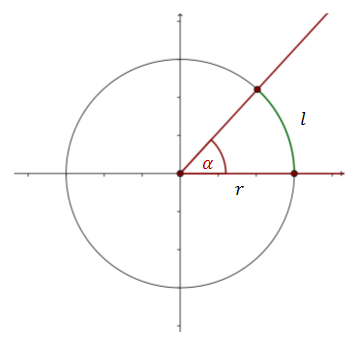
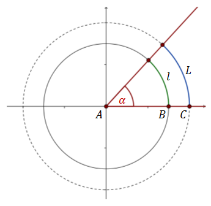
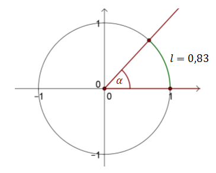
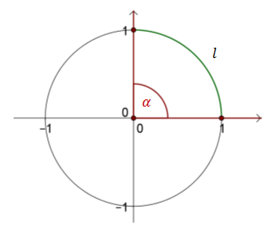
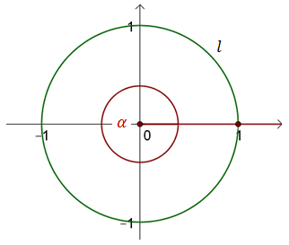

Miara łukowa kąta
Kąty można mierzyć w stopniach (miara stopniowa) albo radianach (miara
łukowa).
Miarę stopniową wykorzystujemy najczęściej do mierzenia kątów w geometrii. We wszystkich pozostałych sytuacjach wygodniejsza zazwyczaj jest miara łukowa.
Miarę stopniową wykorzystujemy najczęściej do mierzenia kątów w geometrii. We wszystkich pozostałych sytuacjach wygodniejsza zazwyczaj jest miara łukowa.
Cechy miary stopniowej:
- Jednostką podstawową jest \(1^\circ \).
- Kąt pełny ma \(360^\circ \).
- Jeden stopień to 60 minut, a jedna minuta to 60 sekund ( \(1^\circ =60'=3600''\) ).
Cechy miary łukowej:
- Jednostką podstawową jest \(1 \text{ radian}\).
- Kąt pełny ma \(2\pi \text{ radianów}\).
Teraz wyjaśnię dokładniej co to jest miara łukowa kąta.
Narysujmy okrąg o
dowolnym promieniu \(r\) i zaznaczmy w nim kąt środkowy \(\alpha \).Kąt \(\alpha \) wycina w okręgu łuk o długości \(l\).  Przy takich oznaczeniach możemy sformułować następującą definicję:
Miarą łukową kąta
α nazywamy stosunek długości łuku \(l\) do długości promienia \(r\).
Zauważmy, że miara łukowa kąta nie zależy od długości promienia, ponieważ
długość łuku jest proporcjonalna do długości promienia.  Na powyższym rysunku mniejszy okrąg ma promień długości \(|AB|\), a większy
\(|AC|\). Stosunek długości łuku do długości promienia dla obu okręgów jest taki sam:
\[\frac{l}{|AB|}=\frac{L}{|AC|}\]
Z powyższej zależności wynika następujący wniosek:
Dla
okręgu o promieniu \(r=1\) miara łukowa kąta jest równa długości wyznaczonego łuku!
Narysujmy okrąg jednostkowy (czyli taki, który ma promień długości \(1\)) i
zaznaczmy w nim dowolny kąt \(\alpha \).  Kąt \(\alpha \) wyznaczył łuk \(l\), o długości \(0{,}83\). Zatem miara kąta \(\alpha
\) to: \[\alpha = 0{,}83 \text{ rad}\]
Jednostką miary łukowej jest radian (w skrócie piszemy: rad).
Ile radianów ma kąt prosty?
Rysujemy okrąg o promieniu \(r = 1\)
i zaznaczamy w jego środku kąt prosty:  Długość łuku \(l\) jest równa \(\frac{1}{4}\) obwodu koła, zatem:
\[l=\frac{1}{4}\cdot 2\pi r=\frac{1}{4}\cdot 2\pi \cdot 1=\frac{1}{4}\cdot 2\pi =\frac{1}{2}\pi
\] Czyli: \[\alpha =\frac{1}{2}\pi \text{ rad}\] Oczywiście \(\frac{1}{2}\pi =\frac{\pi }{2}\),
zatem prościej możemy zapisać: \[\alpha =\frac{\pi }{2} \text{ rad}\]
>Ile radianów ma kąt półpełny?
Rysujemy okrąg o promieniu \(r =
1\) i zaznaczamy w jego środku kąt półpełny:  Długość łuku \(l\) jest równa połowie obwodu koła, zatem: \[l=\frac{1}{2}\cdot
2\pi r=\frac{1}{2}\cdot 2\pi \cdot 1=\frac{1}{2}\cdot 2\pi =\pi \] Czyli: \[\alpha =\pi \text{
rad}\]
Długość łuku \(l\) jest równa połowie obwodu koła, zatem: \[l=\frac{1}{2}\cdot
2\pi r=\frac{1}{2}\cdot 2\pi \cdot 1=\frac{1}{2}\cdot 2\pi =\pi \] Czyli: \[\alpha =\pi \text{
rad}\]
Długość łuku \(l\) jest równa połowie obwodu koła, zatem: \[l=\frac{1}{2}\cdot
2\pi r=\frac{1}{2}\cdot 2\pi \cdot 1=\frac{1}{2}\cdot 2\pi =\pi \] Czyli: \[\alpha =\pi \text{
rad}\] Ile radianów ma kąt pełny?
Rysujemy okrąg o promieniu \(r = 1\) i
zaznaczamy w jego środku kąt pełny:  Długość łuku \(l\) jest równa całemu obwodowi koła, zatem: \[l=2\pi r=2\pi \cdot
1=2\pi \] Czyli: \[\alpha =2\pi \text{ rad}\]
Z powyższych przykładów warto zapamiętać, że: \[\begin{split} &90^\circ
=\frac{\pi }{2} \text{ rad}\\[3pt]&180^\circ =\pi \text{ rad}\\[3pt]&360^\circ =2\pi \text{
rad}\\[3pt] \end{split}\]
Tak naprawdę wystarczy zapamiętać tylko jedną z powyższych
zależności, żeby szybko wyprowadzić sobie inną. Pamiętając, że \(90^\circ
=\frac{\pi }{2}\) możemy wyliczyć, że: \[360^\circ = 4\cdot 90^\circ = 4\cdot \frac{\pi }{2}=2\pi \]
Uwaga!
Zauważ, że w ostatnim przykładzie nie dopisałem do miary łukowej kąta słówka
"rad". Jest to dosyć częsta praktyka, ponieważ znacznie skraca zapis, a i tak wiadomo, że chodzi
o radiany.